Mountain Rescue field operations
SAR Tracker Operator Manual
How to run a search in SAR Tracker: start the mission, follow your teams on the map, mark what you find, and close the mission safely. Written for volunteers, in the order you will need it.
Start here
Check these before you rely on the screen
| Look at | Good | If not |
|---|---|---|
| The tracking strip under the top bar | Green Tracking connected and a recent Last success time. | Red Disconnected · retrying: the dots on the map are the last positions received, not live ones. Amber means read the words and act on them. |
| The mission chip (top left) | Green ACTIVE. | Red flashing PAUSED: the search clock is stopped and live refresh is suspended. Press Resume when searching restarts. |
| FIX and STALE in the top bar | FIX matches the teams you expect; STALE is 0. | STALE above 0 means a device has not reported for more than five minutes. Treat its dot as old. |
| The Maps menu | The map you expect. Use Check View before relying on offline maps. | A public fallback map does not work offline in the desktop app. See Official and offline maps. |
| An amber Browser testing mode banner | Not shown on the desktop app. | You are in a test copy that keeps data in the browser session. Do not use it for a real incident. |
The 6-step start
- Open SAR Tracker. Confirm the tracking strip is green. If it says Tracking is not configured, go to Settings first.
- Type a Mission name your coordinators will recognise later.
- If the search began before you opened the app, set Start offset (hours) (up to 48).
- Tick the groups and devices taking part before you press Start.
- Press Start.
- Check the chip says ACTIVE and your teams are on the map.
The full detail is in Run a mission.
The main screen
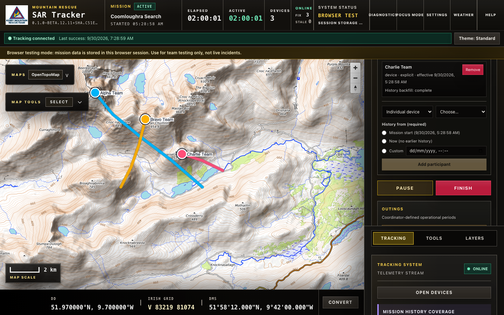
| Part | What it shows |
|---|---|
| Top bar | Mission name, chip and start time; Elapsed and Active (search) timers; device count; Online / FIX / STALE; System status; and the buttons Diagnostics, Focus Mode, Settings, Weather and Help (this manual, in a new tab). |
| Tracking strip | Whether positions are arriving, and when the last one did. The Theme button on the right switches Standard and High contrast. |
| Map | Top left: Maps (which map) and Map Tools (draw, measure). Bottom: scale, and the position under the cursor in DD, Irish Grid and DMS, with a Convert button. |
| Right side | Mission Control at the top (start, pause, finish, people, outings). Below it three tabs: Tracking, Tools and Layers. |
Run a mission
Start a mission
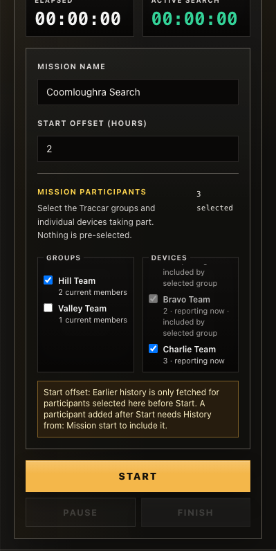
- Mission name: required. Use plain words, for example the place and date.
- Start offset (hours): backdates the start when the search began before you opened the app. Maximum 48 hours.
- Mission participants: nothing is pre-selected. Tick the groups and devices that are part of this search. A group covers everyone in it; their own boxes are locked and say included by selected group.
When you press Start, the chip turns green ACTIVE and the timers run. The Active timer is search time; Elapsed is total time since the (possibly backdated) start.
Add or remove a team during the mission
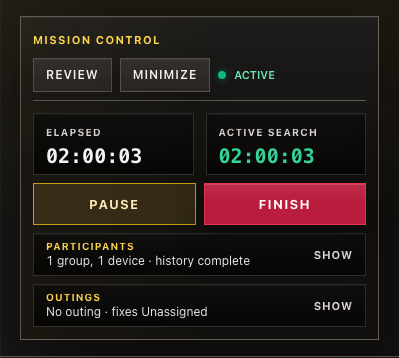
- In Participants, choose Individual device or Traccar group, then pick one from the list.
- Choose History from. There is no default, and Add participant stays greyed out until you choose:
- Mission start: brings in their track back to the mission start.
- Now: records only from this moment.
- Custom: from a time you enter.
- Press Add participant.
Choose carefully: Mission start could count a late joiner's earlier travel as part of this mission. To take someone out, press Remove on their row. That stops collecting from now on; what is already saved stays saved.
History backfill: pending / retrying means the earlier track is still being fetched from the tracking server. You cannot finish the mission until it completes. If it stays pending, check the tracking strip.
If someone joins or leaves a selected group on the tracking server, an amber notice appears (for example 2 joined Hill Team) saying no earlier evidence was invented. Read it, then press Acknowledge membership notices.
Outings
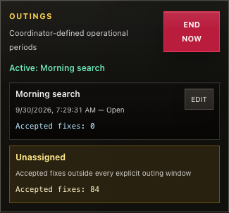
An outing is a period you name and control, such as Morning search. The app never starts or ends one for you.
- Type a name and press Start outing. Press End now when the period ends. Edit changes the boundaries; it never changes recorded positions.
- Outings can cross midnight but cannot overlap.
- With no outing running, new positions are kept as Unassigned. That is normal and not an error.
- Pausing the mission does not end the outing.
Pause and resume
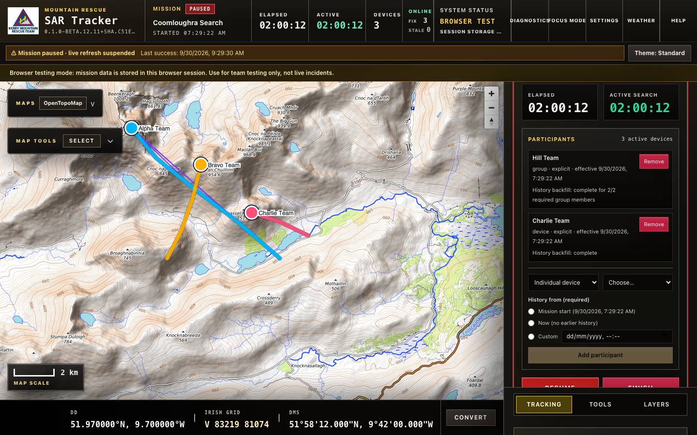
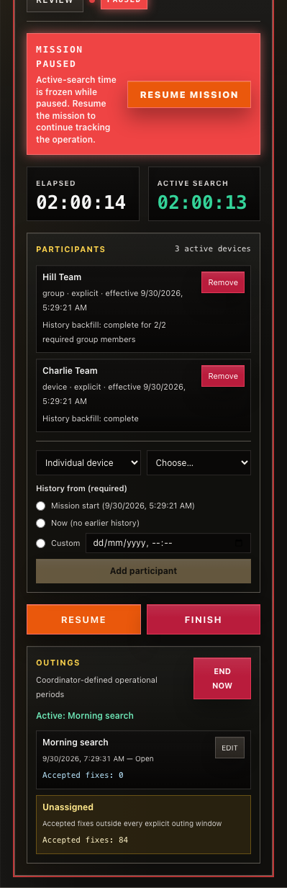
Pause stops the Active search timer; Elapsed keeps running. While paused, live position refresh is suspended, so the map does not update. Press Resume to carry on.
Finish
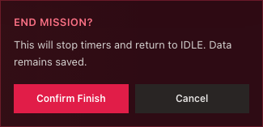
- Press Finish, then Confirm Finish (or Cancel).
- If an outing is still open, the dialog says so and offers End outing now. Finishing does not invent an end time for it.
- The mission returns to IDLE and a Mission Governance card appears so you can archive and lock it.
If the app restarts or crashes
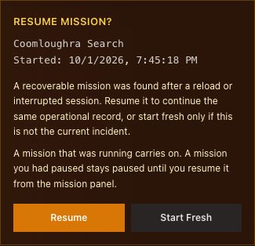
- Resume keeps the same mission. A mission that was running carries on; one you had paused stays paused until you press Resume on the mission panel.
- The gap between the interruption and your choice counts as paused time, and Review records it as an automatic pause after an unexpected shutdown.
- Start Fresh abandons that recovery path. Use it only if the interrupted mission is not the current incident.
- Keep one mission open across a multi-day search, even if the app or computer is closed overnight. Finish only at stand-down. Do not start a new mission each day to save space.
Make more room, or make it easier to read
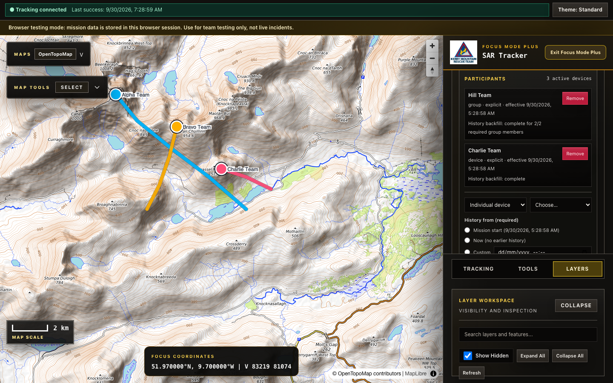
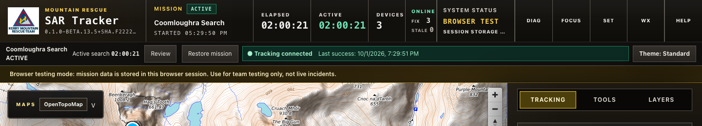
- Focus Mode (top bar) gives the map most of the window. Press Exit Focus to come back. The tracking strip stays visible.
- Minimize (Mission Control header) shrinks Mission Control to one line: mission name, state, search timer, Review and Restore mission. Restore it to reach Pause or Finish. The app restores it by itself when something needs a decision.
- Collapse (Layers tab) hides the whole right side. Restore workspace in the top strip brings it back. Your layer choices are kept.
- Theme: Standard or High contrast. The choice is remembered on this computer.
Tracking and devices
SAR Tracker asks the Traccar server for positions about every 30 seconds (the interval is in Settings). If the server cannot be reached it keeps the last positions it had and marks them, rather than clearing the map.
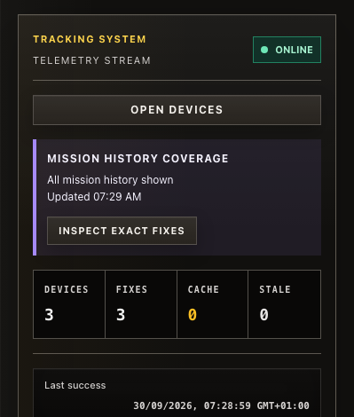
What the tracking strip and chips are telling you
| You see | It means | What to do |
|---|---|---|
| Green Tracking connected | Positions are arriving. | Nothing. Still check Last success is recent. |
| Grey Tracking not connected · Tracking is not configured | No tracking server is set up. | Open Settings and connect Traccar. |
| Red Disconnected · retrying and a red OFFLINE chip | The server is not answering. The map shows last-known positions. | Treat every dot as old. Use your independent source. Try Reconnect in the Devices workspace. |
| Amber Mission paused · live refresh suspended | You paused the mission. No new positions are being fetched. | Press Resume to see live positions again. |
| Amber Tracking connected · 1 fix times unverified | The tracker sent a position without a trustworthy fix time. It is shown for safety but is not used as exact trail evidence. | Use the position with care and note the device. Ask an admin to look if it keeps happening. |
| A device in STALE | No report for more than five minutes. | Call the team. Do not assume the dot is where they are. |
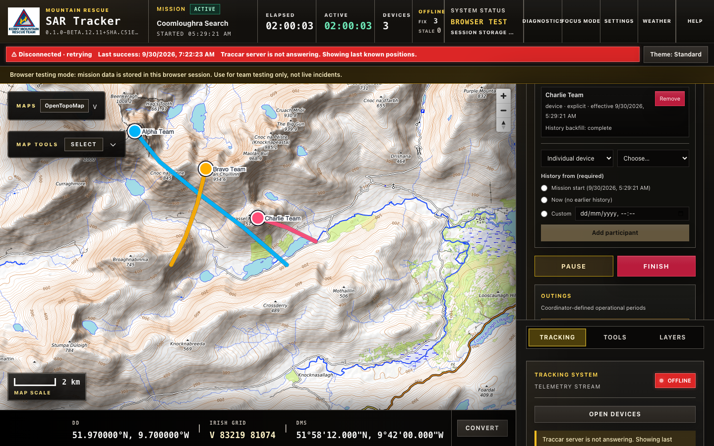
Other amber or red warnings you may meet in the Tracking tab, and what they mean:
| Warning | Meaning |
|---|---|
| MISSION BREADCRUMB STORAGE FAILED | Positions may still be live, but saved history might not survive a restart. Export a support bundle before restarting if it is safe to. |
| TRACKING FALLBACK CACHE UPDATE FAILED | The saved mission is still correct, but the last-known view after a restart may be out of date. |
| BREADCRUMB EVIDENCE WARNING | Some rows in a history reply were rejected. Valid fixes carry on; the rejected rows are kept out of the trail. |
| TRACKING REPLACEMENT EVIDENCE UNSETTLED | An earlier connection has not finished saving its evidence. Keep the app open, check Diagnostics, and try Reconnect. It is not confirmed data loss, but do not ignore it because new positions are arriving. |
| Breadcrumb history is reconciling | Catching up on older history. Current positions stay live. |
If a map overlay (for example markers) fails to redraw, a persistent warning on the map names it while the app retries. Check against your independent source and export a support report if it stays.
Devices workspace
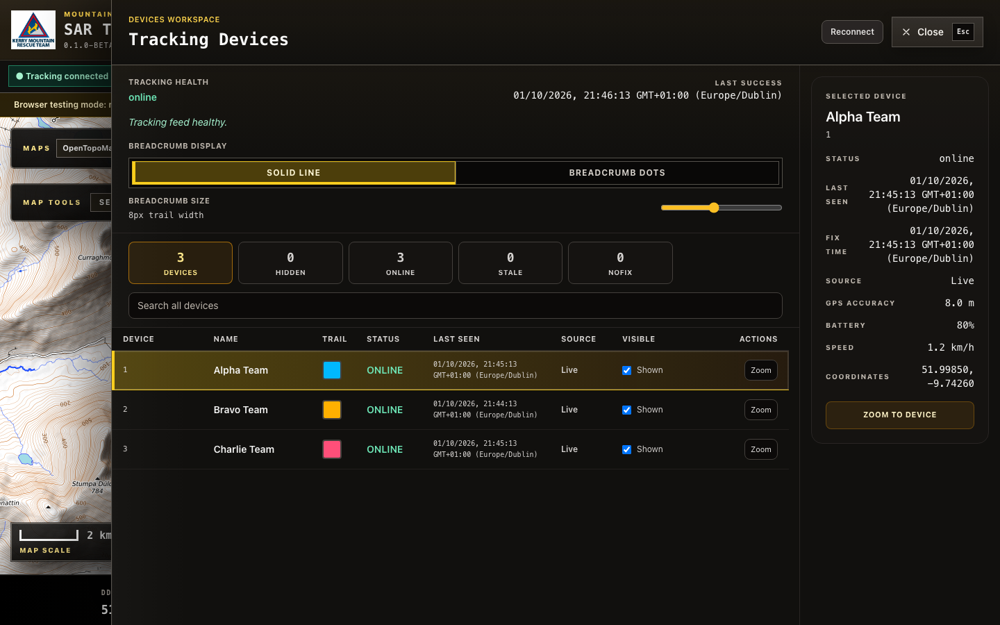
- Filters along the top: Devices, Hidden, Online, Stale, NoFix. The search box searches inside the chosen filter.
- Trail colour: click a swatch to pick a colour for that device's dot and trail.
- Visible: untick Shown to hide a device's dot without removing it from the mission.
- Zoom jumps the map to the device (not available if it has no fix).
- The selected device panel shows status, Last seen, Fix time, source, GPS accuracy, battery, speed and coordinates. Times are local, with the time zone and UTC offset.
- Reconnect reloads settings and reconnects to the tracking server. Until a device sends a fresh fix it shows Unknown / Last known, not Online.
Who is tracked, saved and shown is decided only by Participants in Mission Control. The Devices workspace does not change it.
Breadcrumbs: line or dots
- Solid line draws each trail as a line. On very long routes the line may be simplified for speed; the app then shows Trail display simplified and how far the line may differ. The saved history is not simplified.
- Breadcrumb dots shows every real fix as a dot. If there are more than 10,000, the Tracking tab shows one page at a time with Earlier and Later. A page never uses samples in place of real fixes.
- Breadcrumb size changes line width or dot size for all devices.
To hide only a current-position dot or only a trail, use the Layers tab.
Stationary attention
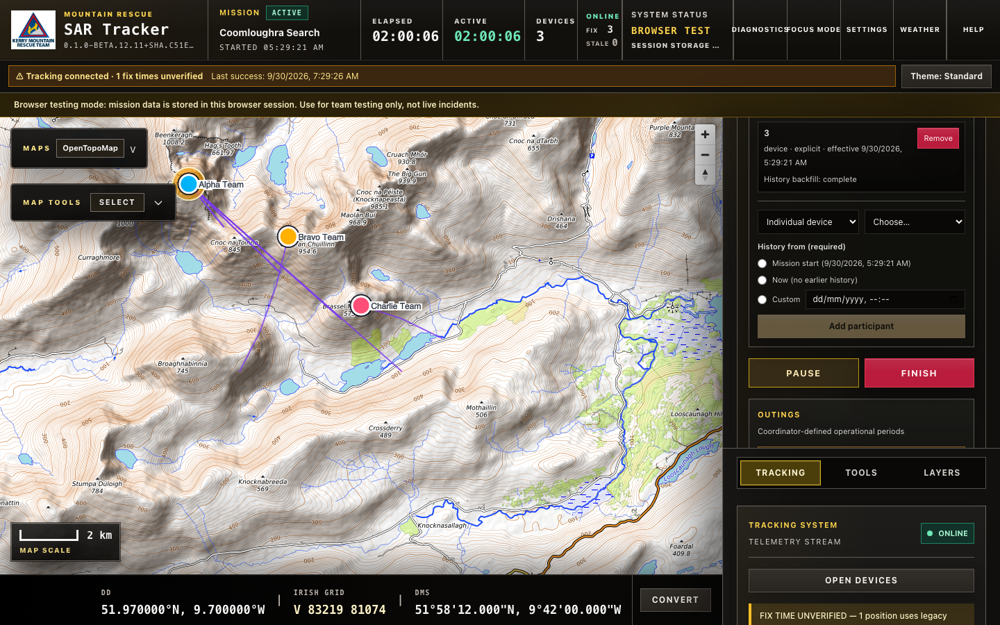
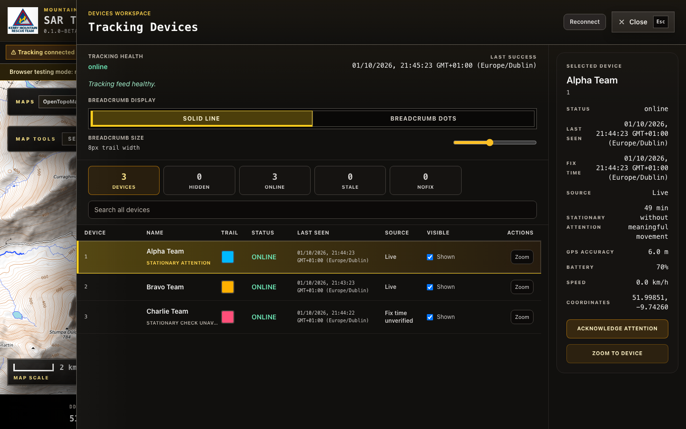
An amber ring means a device has not moved meaningfully for a while. The defaults are 20 minutes and 15 metres (changeable in Settings under Mission Defaults). It is a prompt to check on them, not an emergency declaration. Acknowledge attention dims the ring but changes no data. Real movement clears it. A new stationary spell needs a new acknowledgement.
Mission history coverage
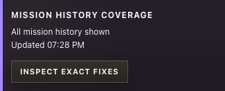
The thin violet lines on the map are the saved history of the people you have ticked. This panel tells you whether that history is complete. It never delays or hides live positions. It will not claim "all shown" unless the saved record backs it up.
| Message | What to do |
|---|---|
| All mission history shown | Complete for every selected participant and outing. |
| All selected history shown | Complete for what is ticked, but you have left some people or outings out (see Layers below). |
| Participant history is still being added | Wait. Live positions are unaffected. Finish stays refused until it completes. |
| History incomplete — showing loaded coverage | Loading failed or was interrupted. What is drawn is real but not the whole record. Press Retry. Do not treat it as the full history. |
| Loaded history is shown, but completeness is not yet verified | Everything may have loaded, but the final check has not passed. Press Retry. |
Progress can go backwards (for example 0 of 0 briefly after a restart). A lower number is safer than a false 100%.
- Inspect exact fixes switches to the paged breadcrumb dots view (see above).
- In Layers, the Mission History checkboxes can leave out a person, a named outing, or Outside outings (fixes that fall in no outing). This only changes what is drawn; it deletes and changes nothing, and it does not hide anyone's live marker.
- Devices that were never picked as participants stay out of mission evidence and the mission map.
Map and grid references
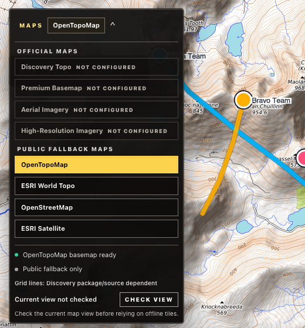
- Maps lists Official Maps (Discovery Topo, Premium Basemap, Aerial Imagery, High-Resolution Imagery) and Public Fallback Maps (OpenTopoMap, ESRI World Topo, OpenStreetMap, ESRI Satellite). Official maps need the desktop app and a licensed package.
- The map name shows below the list, with a health line. Public fallback only means it needs internet.
- Check View tests whether the map you are looking at can be drawn from local files. Run it after you pan or zoom.
Coordinates
The strip at the bottom shows the position under the cursor as DD (latitude/longitude), Irish Grid (TM65) and DMS. Outside Ireland the grid field says Outside Ireland rather than inventing a reference.
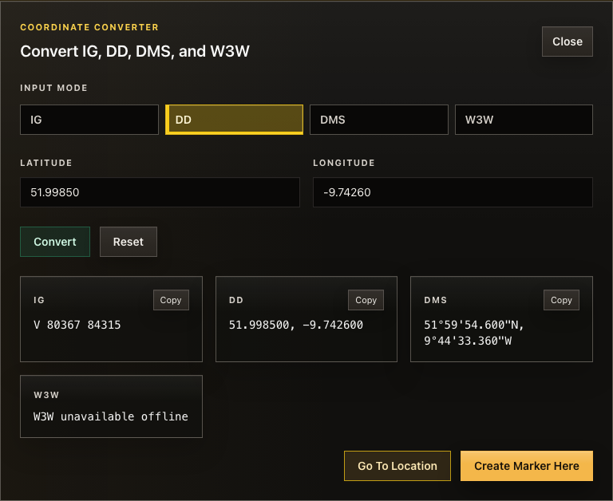
- Choose the input type: IG, DD or DMS. (W3W is not available offline.)
- Type the coordinates and press Convert. Copy any result with Copy.
- Go To Location moves the map there (a red ring marks it briefly). Create Marker Here opens the marker form at that point.
- Short grid references work:
V 80 84means the centre of that grid square. - Decimal degrees use a full stop for the decimal point. Commas are only allowed between latitude and longitude.
- A point far out at sea, or a contradictory input such as a negative value tagged E, is refused with a message instead of being guessed.
- Bearings: magnetic declination for Ireland is taken as 4.5° west. True to magnetic subtract 4.5°; magnetic to true add 4.5°.
Official and offline maps
One-time setup (desktop app)
- Get the team's USB drive or folder with the MapGenie source file and the prepared
.mbtilesmap package. - Open Settings → Official Maps.
- Press Choose MapGenie File and pick the source file.
- Press Add Discovery Package and pick the
.mbtilesfile. The app copies it into its own storage, so you can remove the USB afterwards. - Press Save Settings and wait for the package to be checked.
- In Maps, choose Discovery Topo.
Raw Discovery files (.zip, .tif) are not accepted. An admin must prepare
an .mbtiles package first. Packages are labelled Standard (under 2 GB,
the Kerry/West area, recommended), Mission Area (2–4 GB) or National
(over 4 GB, prepared in advance, never during a mission).
Before you rely on it in the field
- Pan and zoom to the area you will search.
- Open Maps and press Check View.
- Read the Field Readiness result: Field ready (green), Partially ready (amber) or Not field ready (red).
Field ready applies only to the view and zoom you checked. Moving the map, changing map, or a tile failure clears it, so run Check View again. A hatched pattern on the map marks tiles that are missing locally.
| Symptom | What to do |
|---|---|
| Package shows missing | The file is no longer there. Re-import it from the USB. |
| Package shows unreadable | The file is damaged. Get a fresh copy from the map admin. |
| View is outside the package | Pan to the search area, or import a wider package. |
| Official maps say Not configured | No MapGenie file has been chosen yet (or you are in the hosted test copy, which only has public maps). |
Export Readiness Certificate in Settings saves a text file about the package (sizes, zoom range, checks). It describes the package, not your current view.
Layers: show and hide things
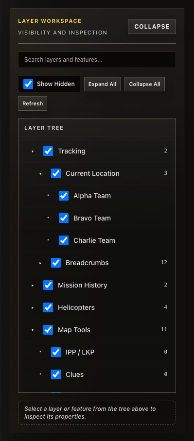
The tree groups everything on the map: Tracking (Current Location and Breadcrumbs, listed per device), Mission History, Helicopters, Map Tools (markers by type, drawings by type, measurements) and GPX Tracks.
- You can show a device's current position without its trail, the trail without the position, or both. A box with a dash means some devices are on and some are off.
- Hidden things stay saved; you just cannot click them on the map. A warning stays on screen while any current location is hidden.
- Search filters the tree. Show Hidden includes hidden items. Expand All / Collapse All and Refresh do what they say.
- Select a row to inspect it. You can give it an Alias (a display name only), move it Up / Down among its siblings, or, for a drawing, press Edit Drawing.
Markers
To place a marker, click empty ground on the map when no tool is armed (dragging only pans the map). The marker form opens with the position already filled in as WGS84, ITM and TM65 grid reference.
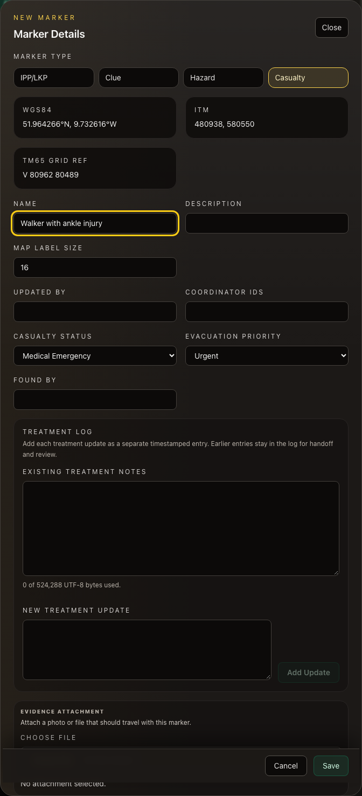
| Type | Records |
|---|---|
| IPP/LKP | Initial planning point or last known position, with subject category. |
| Clue | Clue type, confidence, found by, notes. |
| Hazard | Hazard type and severity. |
| Casualty | Name, Casualty Status (Lost, Crag Fast, Medical Emergency, Unknown, Deceased), Evacuation Priority (Normal, Urgent, Walk-Off, None, Self-Evacuation), found by, and a timestamped treatment log. |
- Casualty markers need Name, Casualty Status and Evacuation Priority before Save works. Missing ones are marked Required.
- Treatment log: type each update in New Treatment Update and press Add Update. Each entry is timestamped and earlier ones are never overwritten.
- Map label size changes the text on the map. Casualty labels start larger.
- An evidence attachment (photo or file) can travel with the marker in the desktop app.
- Retire asks twice (Retire, then Retire Marker; Keep cancels). A retired marker leaves the map but its history stays in the record.
- If a marker sits on top of a drawing, clicking selects the marker. To edit the drawing underneath, use the Layers tab.
- To place a marker from a grid reference instead of a click, use Marker at GR, or Create Marker Here in the coordinate converter.
Draw and measure
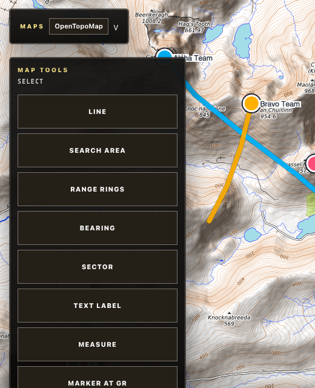
Tools need an active mission (before that the box says Mission required). Pick one tool at a time. When you save or cancel, the map returns to its normal state (no tool armed). There is no separate Select button.
| Tool | How to use it |
|---|---|
| Line | Click points. Double-click or right-click to finish. Shows distance and true/magnetic bearing. |
| Search Area | Click the corners, then right-click or double-click on the last corner to finish. A form opens (below). The tool's own hint does not say how to finish. |
| Range Rings | Click a centre. Set a custom radius, or use the LPB percentile rings. |
| Bearing | Click an origin, then enter distance and a true or magnetic bearing. |
| Sector | Click a centre, then set start and end bearings and radius. The form shows the centre as an Irish Grid reference. |
| Text Label | Click a point, type the text. Drag a placed label to move it. |
| Measure | Click two points for distance and bearing. It is one-shot: after the second click it stops. Clear Measurements asks you to confirm. |
| Marker at GR | Choose a marker type, type a TM65 grid reference such as V 80962 80489, press Create Marker. A bad reference is refused and nothing is created. |
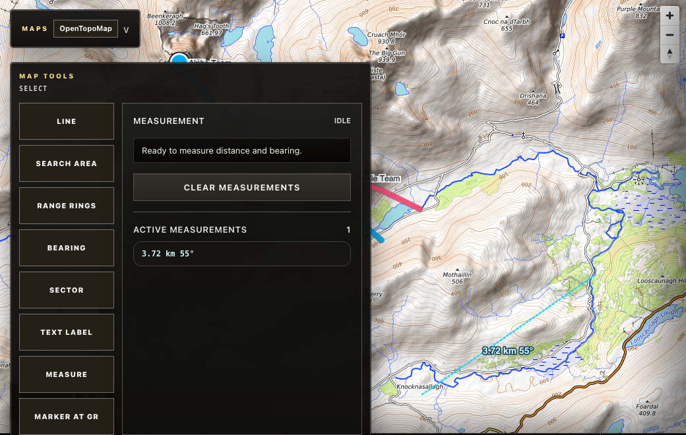
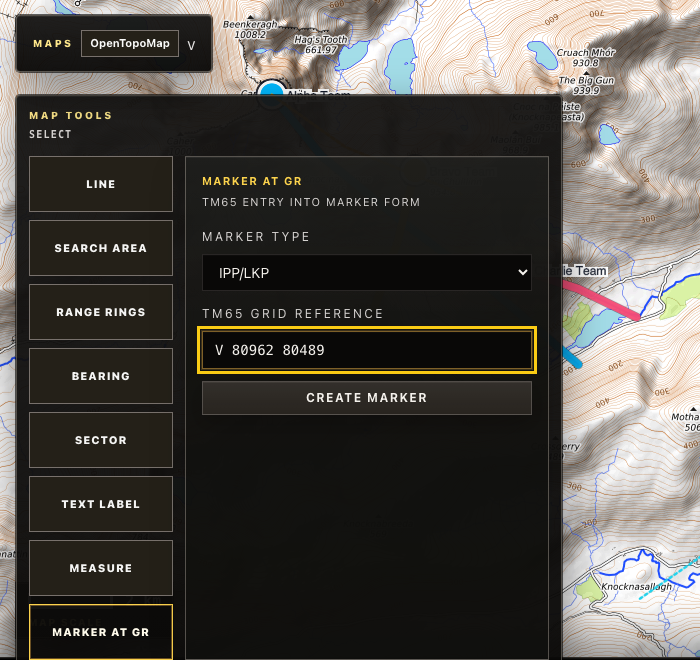
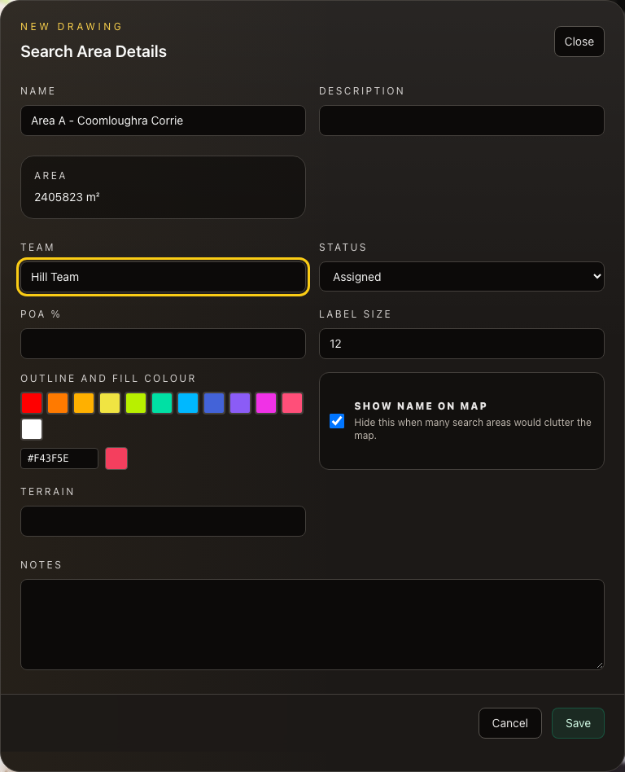
Search areas start red so they show over hills; you can pick a colour, hide the name on the map when labels crowd it, and record team, status, probability of area, terrain and notes. To correct a drawing, click it (or use the Layers tab), then edit or Retire it and confirm. Retiring removes it from the map but keeps its history.
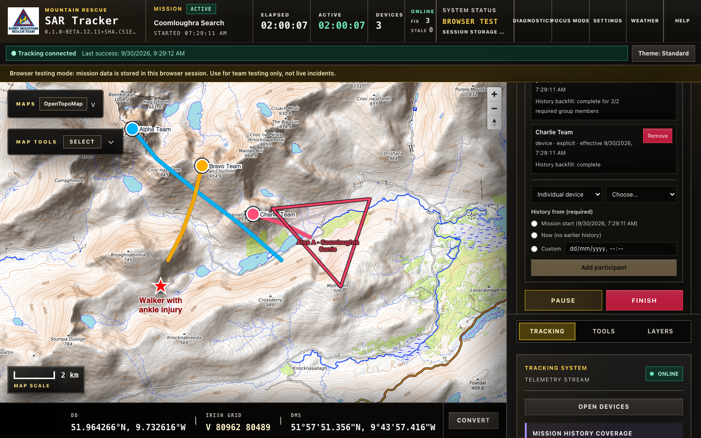
GPX tracks and helicopters
Both live in the Tools tab.
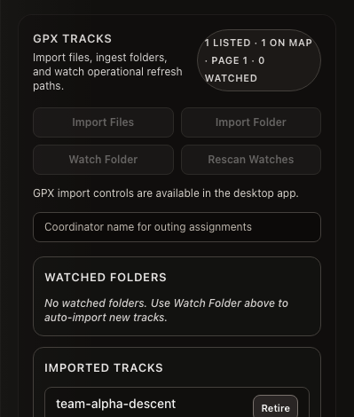
GPX tracks
- Import Files and Import Folder add tracks. Watch Folder imports new files as they appear, and Rescan Watches checks again. These need the desktop app.
- Each imported track has its own colour. Retire takes it off the map but keeps the record.
- Points with no time are kept as static evidence and are not placed at an invented time.
- To link a track to an outing, type the coordinator's name in Coordinator name for outing assignments, then choose the outing on the track's row.
- Limits: 8 MiB per file and 100 files at a time. A bad file is refused with a reason and reported, never shown as a clean import. Wait for one import to finish before starting another.
- Finish and Archive are held back while a GPX import is unfinished.
Helicopters
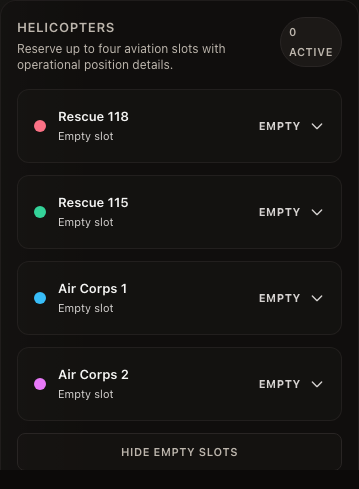
There are four slots: Rescue 118, Rescue 115, Air Corps 1, Air Corps 2. Open a slot to enter call sign, HEX ID, latitude, longitude, altitude, speed, heading and last update. It needs a call sign and a valid latitude and longitude before it saves. Slots in use always stay visible. Hide empty slots tidies the panel. Show or hide helicopters on the map in Layers.
Review and Replay
Review (Mission Control header) opens the Audit Workspace: what the app has saved for a mission. Nothing in it changes the mission.
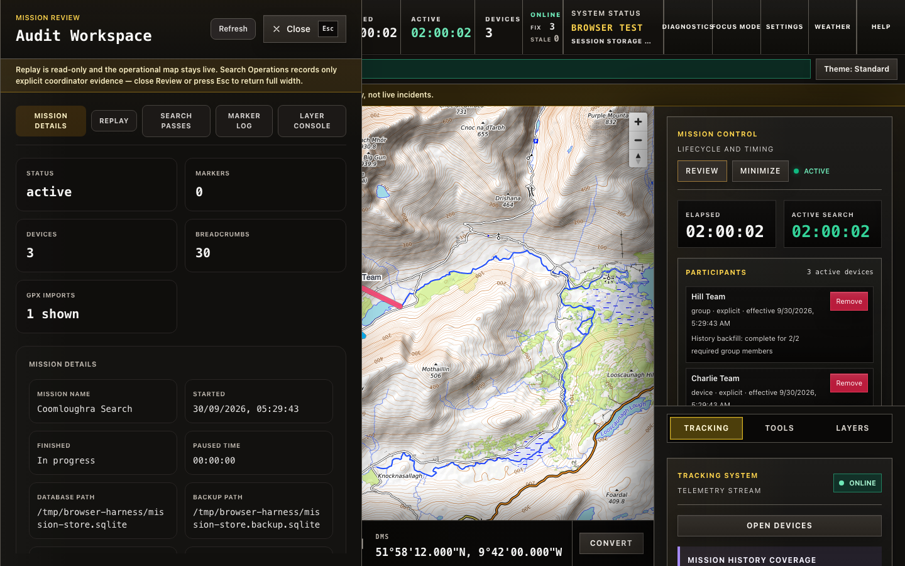
- Close it with Close or Esc to get the map back. If a marker form is open on top, the first Esc closes the form.
- With no active mission, Review opens full screen with a mission selector.
- Tabs: Mission Details (counts, dates, the audit log), Replay, Search Passes, Marker Log, Layer Console.
- The audit log hides raw position chatter by default. Tick Show tracking telemetry to see it.
Replay
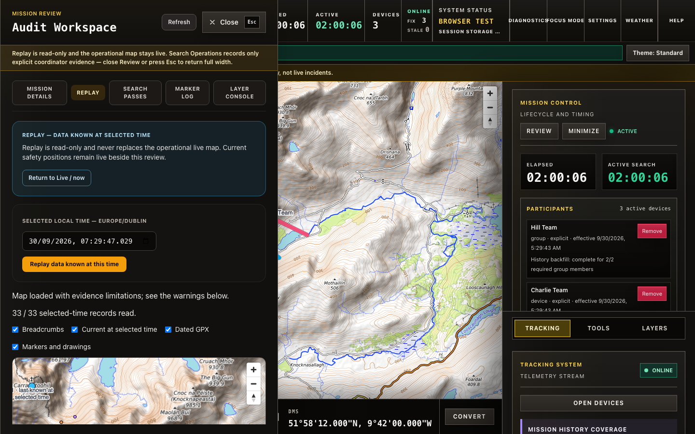
- Open the Replay tab.
- Set Selected local time (Europe/Dublin) and press Replay data known at this time.
- Read the small map: exact dated breadcrumbs, the last known position at that time, dated GPX points, and markers and drawings. Click a feature to see what it is and when.
- Tick or untick the categories to focus. This only changes the Replay map.
- Press Return to Live / now to leave.
Replay is read-only and never touches the live map. It does not replay your old zoom or panels; it shows evidence. Future times are refused. A time that does not exist (clocks going forward) is refused. In the repeated autumn hour you are asked to choose which one you mean. If something is missing or could not be drawn, Replay says so instead of showing a clean map.
Search Passes
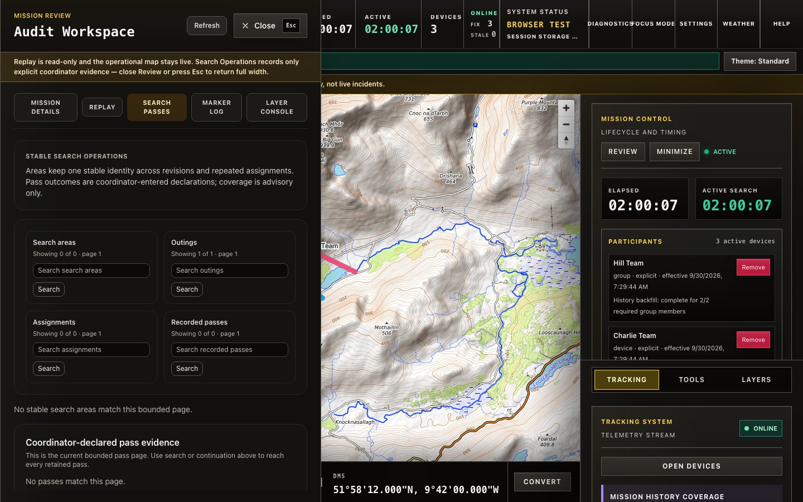
Here a coordinator records who searched which area, and how it went. Choose the coordinator, search area, outing and assignment yourself (nothing is picked for you), enter the pass start and end times (Europe/Dublin), then choose the outcome: fully searched, partially searched or aborted. The outcome is always the coordinator's declaration. Any coverage figure from breadcrumbs is advice only and never sets the outcome. A pass must sit inside its outing and cannot be in the future. Finished missions show these records but do not accept new ones.
Archive and lock a finished mission
After Finish, archiving makes a single encrypted copy of the mission, checks it, and locks the mission so it cannot change. Do it at stand-down, not mid-search.
Archive & Lock
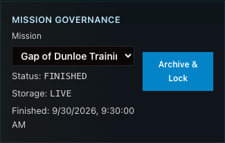
- Find Mission Governance in Mission Control. It acts on the mission named there, which starts as the one you finished most recently. If several missions are finished, choose the right one in the Mission list and check the name before you go on.
- Press Archive & Lock.
- Type an archive passphrase twice. Use at least 14 characters with at least three of: lower case, upper case, numbers, symbols. Press Generate one-time recovery code.
- Write the code down safely. Type it back exactly in the confirmation box.
- Press Create, seal, and verify archive and wait.
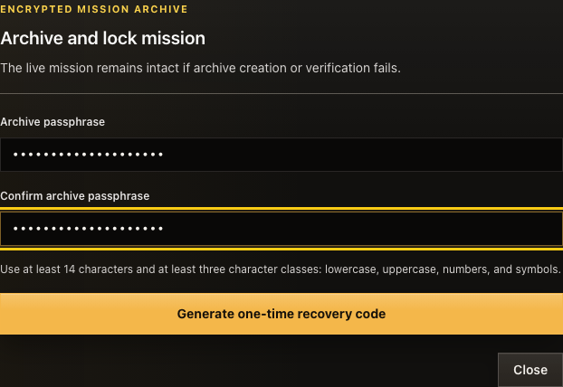
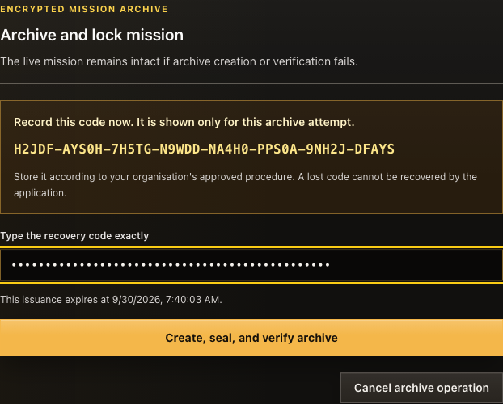
The app creates the encrypted archive, seals it (this locks the mission read-only), then restores those saved bytes into a scratch area and checks them independently. If creating or checking fails, it says so and your live data is untouched. A sealed but unverified archive stays locked and marked incomplete; retry it from Review with the original passphrase and recovery code. Do not call it archived until Review shows Verified encrypted archive.
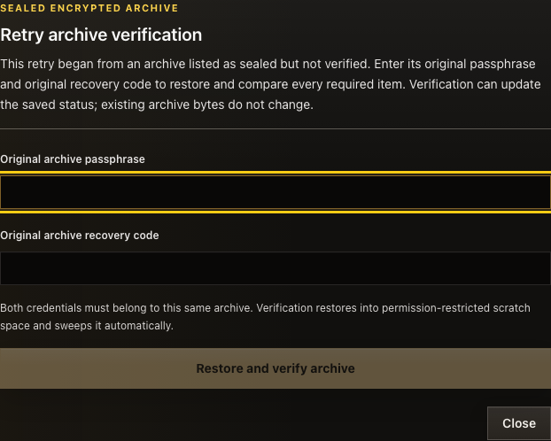
Open an archive (read-only)
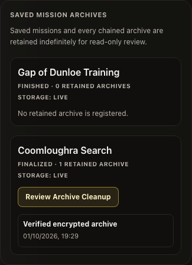
- Open Review and find the mission under Saved Mission Archives.
- Select the archive, choose Passphrase or Recovery code, enter it, and press Open Read-only Archive.
- The banner says Archived mission - read-only and shows the archive's SHA-256. Look around, use Replay.
- Press Close Archive Review when finished so the temporary copy is removed. If it warns that cleanup failed, use the retry.
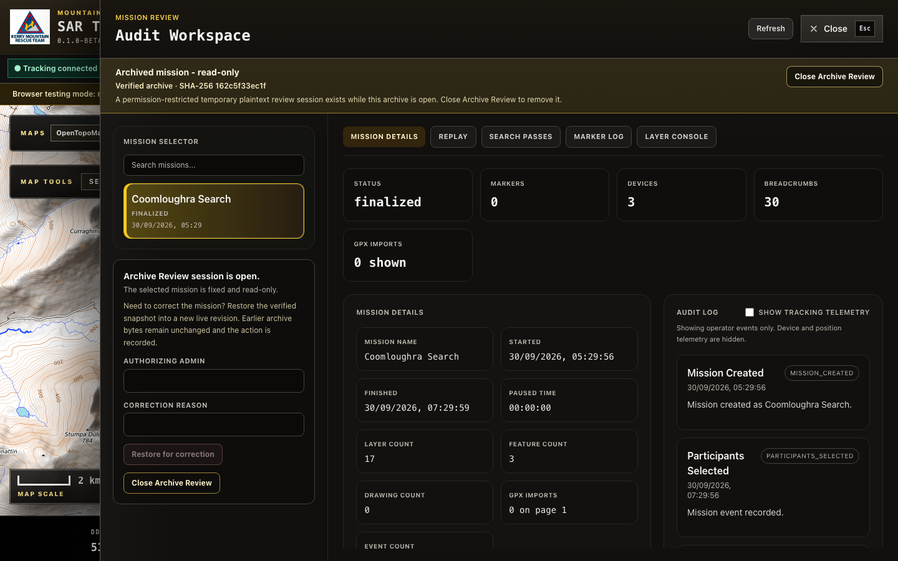
Restore for correction needs an authorizing admin and a reason. It opens a new live revision; the earlier archive is never changed. Admin Unlock on the Governance card also needs a named admin and a reason. Use both only when your coordinator tells you to. Older archives labelled Legacy unencrypted open without a passphrase, and are not upgraded.
Archive cleanup (optional)
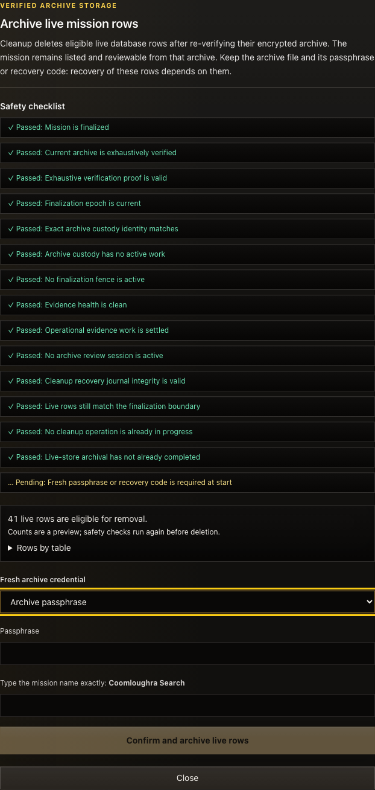
Review Archive Cleanup removes the mission's bulk rows from the working database after re-checking the verified archive. The mission stays listed and can still be opened from the archive. You must type the archive's credential again and the mission name. It frees space for reuse; it is not secure erasure. Keep the archive file and its passphrase or recovery code: recovering those rows depends on them. Do not run cleanup during operations.
If the app says evidence was lost
If the app knows some evidence could not be saved (for example after a crash), the mission is marked so it can never claim to be Complete or 100%. To archive anyway, a named admin records the gap.
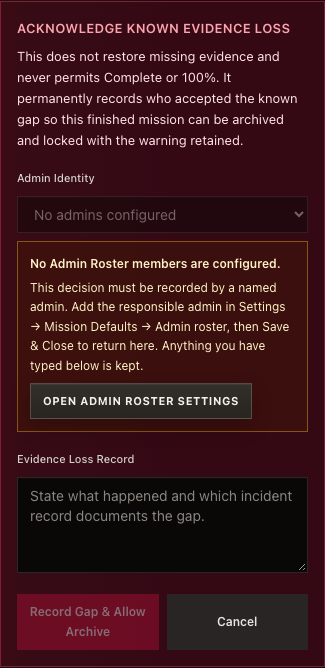
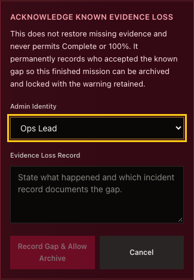
This records who accepted the gap. It does not restore evidence, and the warning stays with the mission. If the admin list is empty, add the admin in Settings → Mission Defaults → Admin roster, press Save & Close, and you return to the same dialog with your typing kept.
Settings
Open Settings from the top bar. If you close it with unsaved edits the app asks whether to keep editing or discard. The bar at the bottom has Test Connection, Save & Close and Save, Connect & Close.
Connect to Traccar
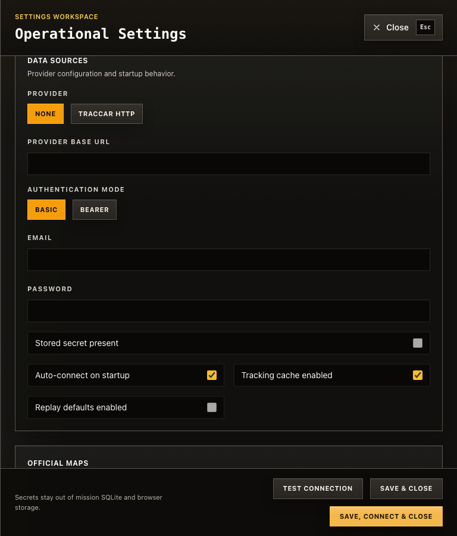
- Under Data Sources, choose provider Traccar HTTP.
- Enter the Provider base URL your admin gave you. Do not put a username or password in it; such URLs are refused.
- Choose Basic (email and password) or Bearer (token) and fill it in.
- Press Test Connection. It signs in and checks device access.
- Press Save, Connect & Close. Tracking connects and you return to the map.
The password or token is kept in the app's own local credential file (not the operating system's keyring) and is cleared from the form after saving. If tracking says no credential is available, enter it again here.
Mission defaults, rosters and weather
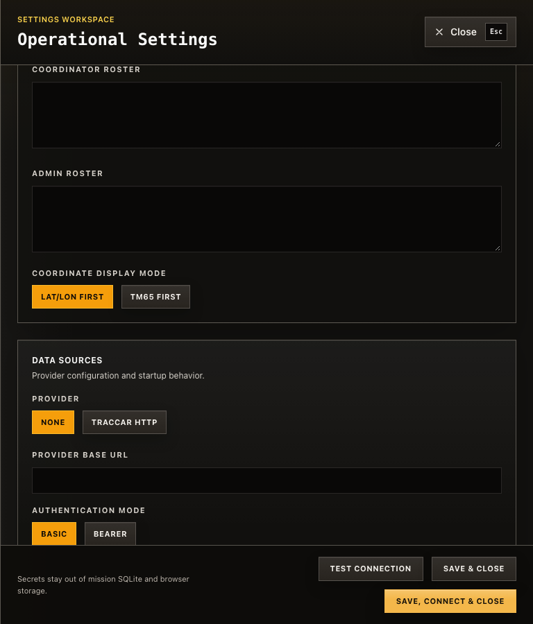
- Auto-refresh interval (seconds) and Auto-save interval (seconds): both default to 30.
- Stationary attention window (minutes) and movement floor (metres): defaults 20 and 15. Change them only on purpose.
- Primary and Backup mission root: where mission files are kept. Leave blank unless an admin tells you otherwise.
- Coordinator roster and Admin roster: names, one per line (commas also work). Coordinators are the people named in your records. Admins can record evidence gaps and unlock missions. These are lists of names for the record; they are not passwords, so treat Settings as trusted-computer access.
- Coordinate display mode: Lat/Lon first or TM65 first.
- Official Maps: see Official and offline maps.
- Weather Links: press Add Weather Link for a named link such as Met Éireann. It appears in the Weather menu and opens in your normal browser. SAR Tracker does not fetch or forecast weather itself.
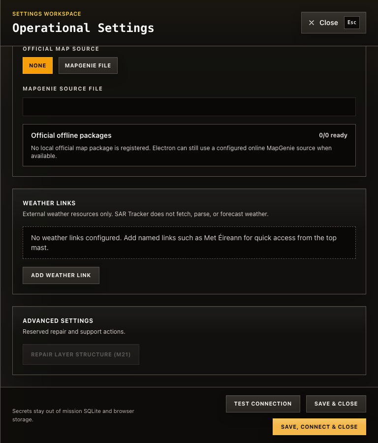
When something looks wrong: Diagnostics and support
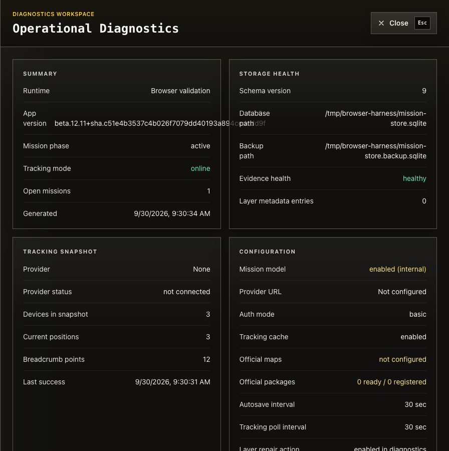
Open Diagnostics in the top bar. It shows runtime and app version, mission phase, storage health (including Evidence health), the tracking snapshot and the current configuration. Diagnostics never shows passwords or tokens, and never shows the paths of map packages.
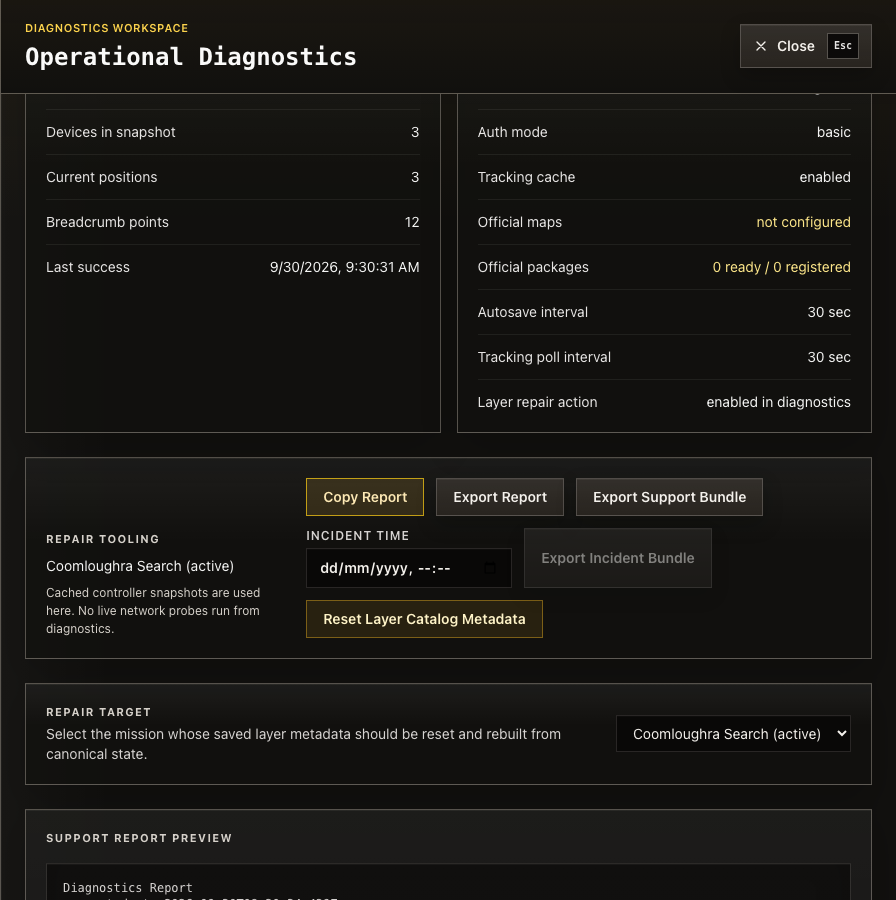
- Take a screenshot of what you see, if you can.
- Note the time it happened.
- In Diagnostics, enter that time in Incident time and press Export Incident Bundle (it covers 30 minutes either side). For a general problem press Export Support Bundle.
- Send the file with a few words on what you were doing. Look at it first: remove anything private, such as exact locations of a casualty, before sharing it outside the team.
- Copy Report and Export Report give the readable report shown at the bottom of the page.
- If the app closed unexpectedly last time, an amber notice at the top of Diagnostics offers a direct Export Support Bundle button. It never blocks an active mission.
- Bundles are saved on this computer only. Nothing is sent anywhere automatically. In the browser test copy the bundle holds only a basic environment snapshot.
- A small amber Autosave warning in the top bar means the automatic backup is stale or failed. Keep the app open and export a bundle. A backup that fails around Start, Pause, Resume, Finish, Archive or Unlock shows a persistent alert below the top bar; do not treat the backup as current until it clears.
If SAR Tracker freezes (Linux)
If the clock still moves but clicks and keys do nothing, leave the app open. Do not restart, reinstall or force-close it. In a terminal run the report-only collector:
sh "/opt/SAR Tracker Electron Validation/resources/field-tools/sartracker-linux-hang-collector.sh" --screenshot
For a running AppImage, find it with
find /tmp -maxdepth 4 -path '*/resources/field-tools/sartracker-linux-hang-collector.sh' -print -quit
and run it with sh and --screenshot. It reads process and graphics state and does not attach
to the app or copy mission data. Review the optional screenshot before sharing it (it may show the
map), then send the .tar.gz with the time and what you tried.
If it will not start
- A separate startup fault window means a safety check failed before the mission screen opened. Read it, close it, and do not edit or delete the profile. Ask the maintainer.
- SAR Tracker could not restart safely or could not close safely: leave the app as it is, keep the profile untouched and contact the maintainer rather than forcing it closed.
- A database made by a newer version is refused with SAR Tracker could not start. Install a matching build; do not downgrade the profile in place.
- Only one SAR Tracker runs at a time. If you see two windows, close the extra one.
- Log files: Linux
~/.config/sartracker-web/logs/andcrashes/; macOS~/Library/Application Support/sartracker-web/; Windows%APPDATA%\sartracker-web\.
Team beta notes
Install a desktop beta
- Use only a beta that has a release note (under
docs/releases/in the project). If the maintainer has not pointed you to one, ask before opening the app. - Every beta ships with a
SHA256SUMSfile. Check your download against it before running it. - Linux (the current CI beta): an
.AppImage(portable) and a.deb(system install), both x86_64. AppImage:sha256sum -c SHA256SUMS --ignore-missing, thenchmod +xthe file and run it. If you seelibfuse.so.2errors, installlibfuse2t64(Ubuntu 24.04 / Debian 13) orlibfuse2(Ubuntu 22.04 / Debian 12). The.deb:sudo apt install ./<file>.deb. - Windows: an unsigned installer, only if the maintainer says a Windows build exists for that beta. Windows shows a "Windows protected your PC" warning: More info → Run anyway. Managed machines that block it cannot be worked around; use another computer.
- macOS: built locally and supplied by the maintainer. If Gatekeeper refuses it, try right-click → Open first. Only if the maintainer asks, remove quarantine with
xattr -dr com.apple.quarantine /Applications/sartracker-web.app. Never do that for an app from an untrusted source.
The hosted test copy
- It is at https://sartracker-web.vercel.app/?missionHarness=1 and is for training and quick surface checks only. It keeps mission data in the browser session, has no official maps, and cannot use file pickers or restart recovery. Never use it for a real incident.
- Confirm the amber Browser testing mode banner and Browser test / Session storage only in the top bar.
- In Settings → Data Sources use the team's https Traccar address (from your admin), Basic login, Test Connection, then Save, Connect & Close. A plain
http://address is blocked from this page. After a full page reload, enter the password again. - If breadcrumb history looks empty, restart the mission with a 24 or 48 hour Start offset and tick the teams before Start.
- When you report something, include the URL, mission name, browser, what you expected and what happened, and a screenshot if you can. The checklist is
docs/team-testing-feedback-loop.md.
Using a beta beside your normal process (shadow use)
In shadow use the team's existing process stays in charge of positions, tasking and records. SAR Tracker is a second opinion. Before a field session, the release note must name the exact build, the existing process, the person running it, and a rehearsed switch back to that process that takes no more than 60 seconds. If any of that is missing, do not run a shadow session.
Record good exercises as well as faults. Ordinary wording or layout feedback needs a short note and, if you like, a cropped, redacted screenshot. Never share a raw mission database, a whole profile, a precise location, a credential, a private map, or an unchecked screenshot as routine feedback.
Known issues and limits
This list is kept honest on purpose. It is safer to know what is not finished than to assume it.
Things that can catch you out
- Public fallback maps do not work offline in the desktop app. Only an imported official map does.
- Paused means no live refresh. The map does not update until you Resume.
- Field ready covers only the view and zoom you checked.
- W3W (what3words) conversion is not available.
Limits of this beta
- Coordinator and admin rosters are lists of names for the record. They are not logins, so anyone who can open Settings can change them. Treat Settings as trusted-computer access.
- Replay reconstructs what was known at a time. It does not reproduce your old screen layout or zoom.
- Archive encryption protects the archive file, not the live database, and archive steps use temporary readable copies (see Archive and lock).
- Only Linux desktop betas are produced by the release pipeline. Windows and macOS builds are supplied separately, and signing and notarizing are still open work.
- The hosted test copy keeps data in the browser session only and caps very large histories.
- This manual was checked in a browser test copy with made-up data. It did not run: the official map file pickers, GPX file pickers, marker file attachments, real archive encryption on disk, support and incident bundle export, the Linux freeze collector, startup faults, or live Traccar. Those descriptions come from the app's own labels, code and earlier verified releases. If one of them differs on your desktop, tell the maintainer.
Maintaining this manual
Change this file whenever anything a volunteer can see changes. Describe what the app does today, not what is planned. Put anything unfinished under Known issues.
All the screenshots are made by one script from synthetic data (made-up teams, made-up archive passphrase, the Reeks area of Kerry as a backdrop). To rebuild every image at 1440x900:
MANUAL_CAPTURE=1 npx playwright test tests/e2e/manual/capture-manual.spec.ts --project=chromium --workers=1
It takes about two minutes and writes to public/manual/assets/. Look at every image before
you commit: a few close-ups are taken in a taller (1440x1500) window because the right-hand panels
scroll. Then read the manual against the running app, section by section.